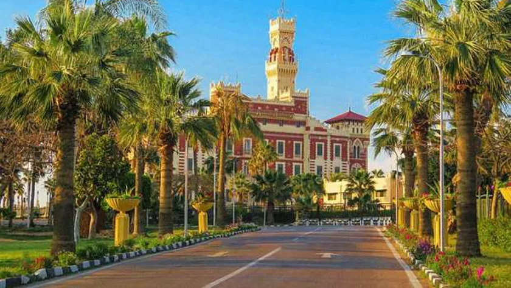

Montaza Palace
Montaza Palace is a palace and extensive gardens in the Montaza district of Alexandria, Egypt. It was built on a low plateau east of central Alexandria overlooking a beach on the Mediterranean Sea.
Places in Montaza
- Montaza Beach
- Stanley Bridge
- San Stefano Grand Plaza
Location
Montaza Palace is located at the Montaza Park in the eastern part of Alexandria.